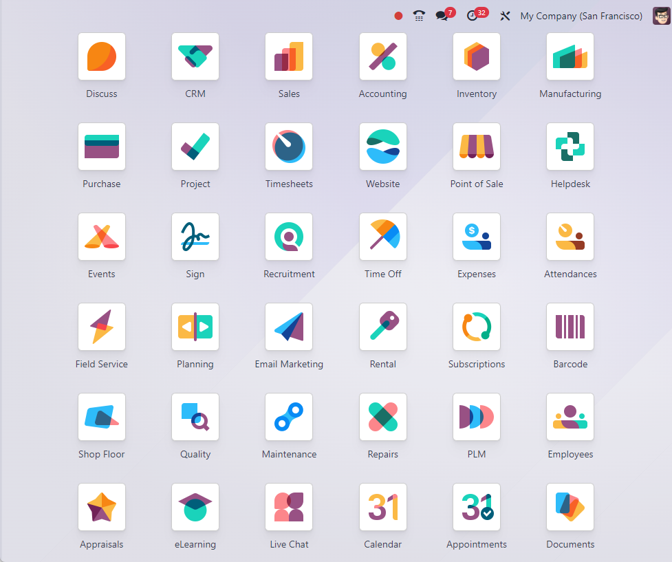
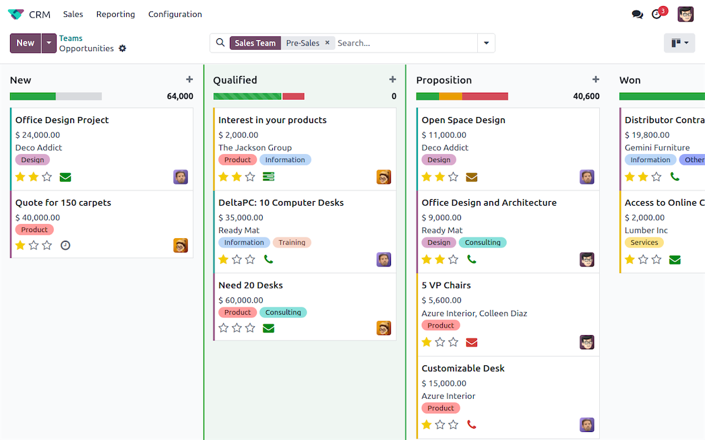
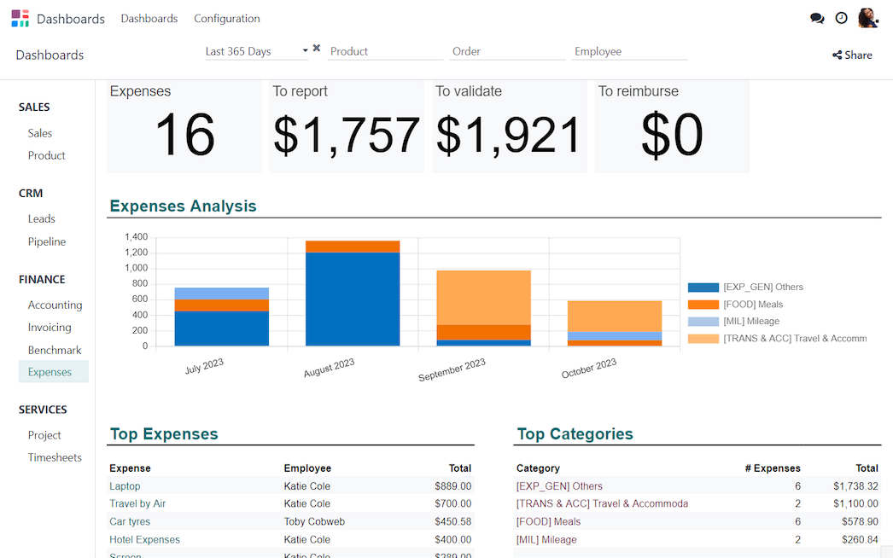

Implementación
Descubrimiento, módulos, parametrización, datos, pruebas, capacitación y puesta en marcha.
Implementamos, soportamos y desarrollamos sobre Odoo para centralizar procesos, conectar sistemas y acompañar el crecimiento sin imponer una operación genérica.

Descubrimiento, módulos, parametrización, datos, pruebas, capacitación y puesta en marcha.
Resolución funcional y técnica, ajustes, evolución de procesos y acompañamiento continuo.
Módulos propios, automatizaciones, reportes, APIs e integraciones específicas.


Integramos padrones de alícuotas de ARBA y AGIP, servicios externos, portales y flujos documentales según el contexto de la empresa.
Padrones, datos maestros y automatizaciones de soporte a la gestión impositiva.
E-commerce, bancos, logística, BI y aplicaciones propias.
Configuración y desarrollos pensados para el trabajo diario de cada rol.
Contanos módulos, versión, cantidad de usuarios y objetivo principal.